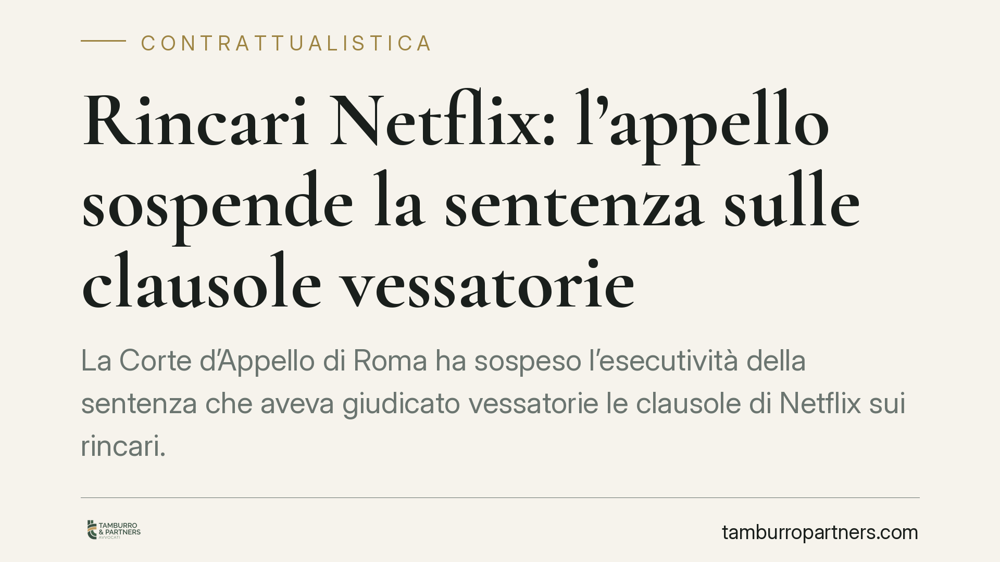

Rincari Netflix: l'appello sospende la sentenza sulle clausole vessatorie
La Corte d'Appello di Roma ha sospeso l'esecutività della sentenza che aveva giudicato vessatorie le clausole di Netflix sui rincari. Per ora niente comunicazioni agli abbonati né pubblicazioni sulla stampa. Il merito prosegue, ma la vicenda riporta al centro un tema concreto: fino a che punto un fornitore può modificare unilateralmente il prezzo di un contratto a esecuzione continuata.

Il fatto
In primo grado il Tribunale di Roma, su iniziativa del Movimento Consumatori, aveva dichiarato vessatorie le clausole con cui Netflix si riservava di modificare i prezzi dell'abbonamento (il cosiddetto *ius variandi*, cioè il potere di variare unilateralmente le condizioni contrattuali). La sentenza imponeva alla piattaforma obblighi di comunicazione agli abbonati e di pubblicazione sui quotidiani.
La Seconda Sezione Civile della Corte d'Appello di Roma ha però sospeso l'esecutività di quella decisione, ritenendo l'impugnazione "manifestamente fondata". In pratica: la sentenza di primo grado resta sulla carta, ma non produce effetti finché l'appello non si sarà concluso. Nessun rimborso, nessuna comunicazione obbligatoria, per ora.
Inquadramento normativo
Il cuore della questione è l'art. 33 del Codice del Consumo (D.lgs. 206/2005), che presume vessatorie le clausole che determinano un significativo squilibrio tra i diritti e gli obblighi delle parti a danno del consumatore. Tra le ipotesi tipiche rientra proprio la facoltà del professionista di modificare unilateralmente prezzo e condizioni senza un giustificato motivo indicato nel contratto.
L'art. 36 sanziona con la nullità (di protezione) le clausole vessatorie, mentre l'art. 37 disciplina l'azione inibitoria delle associazioni dei consumatori. Sullo sfondo opera la Direttiva 93/13/CEE, che da oltre trent'anni fissa lo standard europeo in materia di clausole abusive nei contratti con i consumatori.
La sospensione, invece, poggia sull'art. 283 c.p.c., che consente al giudice d'appello di sospendere l'efficacia esecutiva della sentenza impugnata quando ricorrono gravi e fondati motivi. È uno strumento processuale, non una decisione sul merito: non dice chi ha ragione, dice soltanto che gli effetti restano congelati in attesa del giudizio definitivo.
Perché conta: il principio del vincolo contrattuale
Il *ius variandi* vive in tensione con l'art. 1372 c.c., secondo cui il contratto ha forza di legge tra le parti e non può essere sciolto o modificato se non per mutuo consenso. Un prezzo pattuito dovrebbe, di regola, restare quello.
La clausola che consente la modifica unilaterale non è però vietata in assoluto. La differenza la fanno tre elementi: un giustificato motivo tipizzato nel contratto, la trasparenza della clausola e il riconoscimento al consumatore di un diritto di recesso effettivo in caso di aumento. Quando questi presidi mancano, lo squilibrio diventa rilevante e scatta il giudizio di vessatorietà.
Implicazioni pratiche
Per gli abbonati, nell'immediato, non cambia nulla: nessun rimborso automatico e nessuna comunicazione dovuta. Chi contava sugli effetti della sentenza di primo grado dovrà attendere l'esito del merito.
Per le imprese che adottano modelli ad abbonamento o a esecuzione continuata, la vicenda è un richiamo preciso. Le clausole di adeguamento prezzo vanno costruite, non copiate. Una formula generica ("il fornitore può modificare le condizioni in qualsiasi momento") è il profilo più esposto a una contestazione di vessatorietà.
Va inoltre distinto il piano individuale da quello collettivo: la nullità della clausola opera a favore del singolo consumatore, mentre l'azione inibitoria mira a eliminare la clausola per tutti i rapporti futuri. La sospensione incide su quest'ultima dimensione.
Cosa fare in concreto
- Verificate le clausole di adeguamento prezzo nei vostri contratti standard: indicate sempre il giustificato motivo e i parametri oggettivi dell'eventuale aumento.
- Prevedete un diritto di recesso azionabile dal cliente in caso di modifica sfavorevole, con un preavviso congruo e modalità semplici.
- Curate la trasparenza: la clausola deve essere redatta in modo chiaro e comprensibile, non nascosta tra le condizioni generali.
- Documentate le ragioni degli aumenti, così da poter dimostrare il giustificato motivo in caso di contestazione.
- Monitorate l'esito dell'appello: la decisione di merito potrà fissare criteri utili a ricalibrare i modelli contrattuali del settore digitale.
Un'avvertenza di metodo
La sospensione non è un verdetto. Sarebbe un errore leggerla come un via libera definitivo alle clausole contestate, così come lo sarebbe stato considerare la sentenza di primo grado un punto d'arrivo. Il quadro si definirà solo con la decisione di merito, e la materia resta tra le più vigilate dalla giurisprudenza europea.
Contributo informativo a cura di Tamburro & Partners - Avv. Giuseppe Tamburro. Non costituisce parere legale.
Ogni contratto ha il suo equilibrio.
Se vuoi una revisione delle clausole o una redazione su misura, scrivi allo studio. Ti rispondiamo entro un giorno lavorativo.